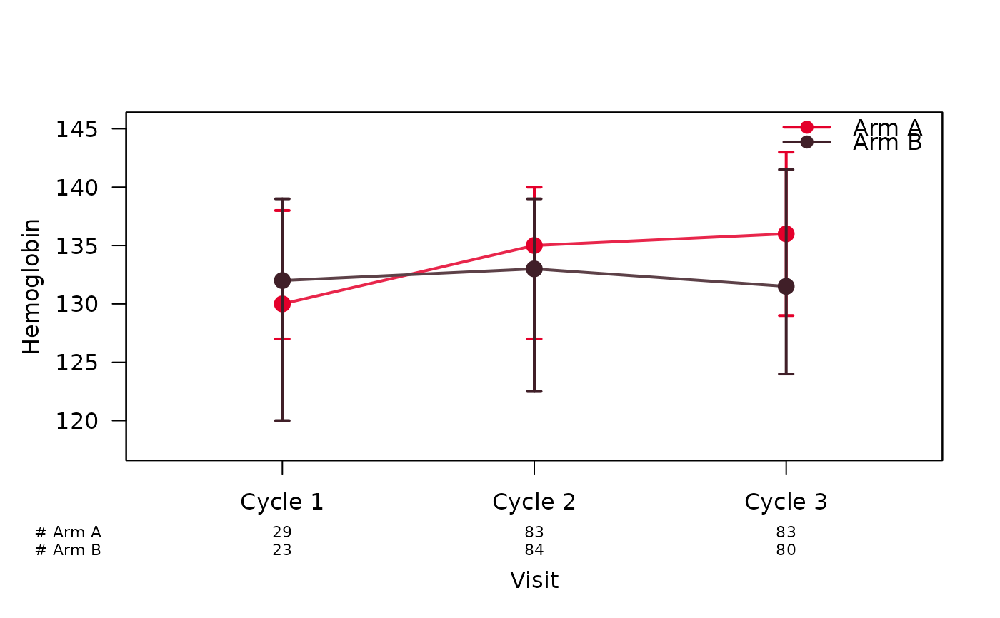
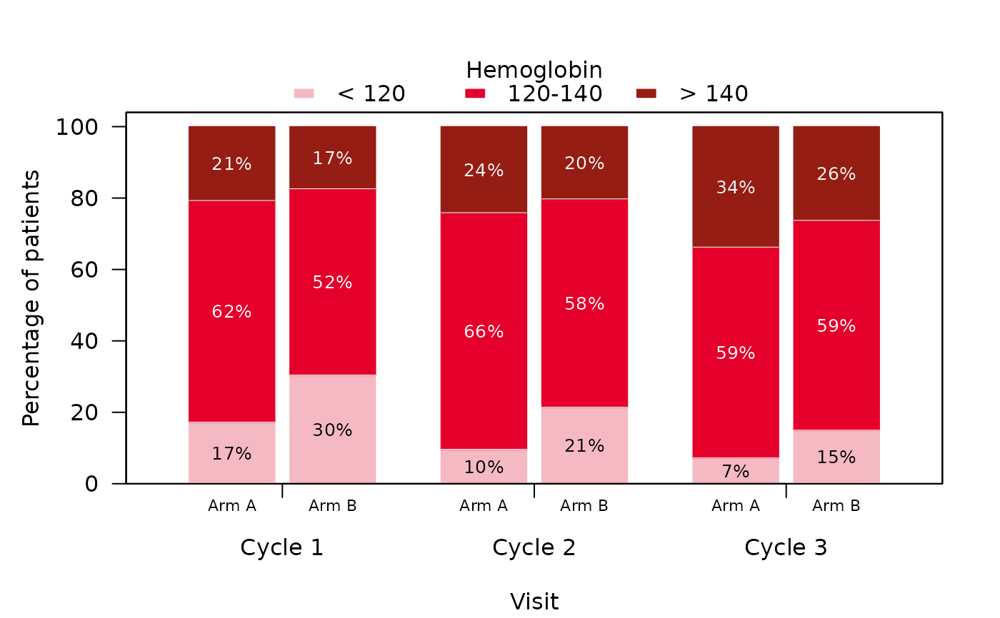

Plots one variable of a table produced by summaryByVisit() over the
visits, using the numbers printed in the table rather than the raw data.
Continuous variables are drawn as a line plot of the point estimate with
its interval (see lineplotSCI()), categorical variables as stacked bars
(see stackedbarplotSCI()).
Usage
plotByVisit(
tbl,
var = NULL,
stat_cont = NULL,
missing = FALSE,
missing_text = "Missing",
...
)Arguments
- tbl
A table returned by
summaryByVisit()withas_flex_table = FALSE(the defaultTRUEreturns a flextable, from which the numbers cannot be read back).- var
The variable to be plotted, given as its label in the table (the bold header row, e.g.
"Hemoglobin") or its position among the variables of the table. May be omitted if the table holds a single variable.- stat_cont
The statistic of continuous variables, as passed to
summaryByVisit(). Default isNULL, which reads it from the table footnote; if the footnote is not recognised,plotByVisit()stops and asks forstat_contrather than guess. Astat_contthat does not fit the printed cells (e.g."mean_sd"for a median (range) table) is an error too.- missing
A logical toggle switch adding the missing-value rows of a categorical variable as a segment of their own. Default is
FALSE, which leaves them out, so that percentages are relative to the non-missing observations.- missing_text
The label of the missing-value rows in the table, as passed to
summaryByVisit(). Default is"Missing".- ...
Further arguments controlling the appearance of the plot, as documented in
lineplotSCI()(continuous variables; e.g.interval_type,risk_table,col,legend_position) orstackedbarplotSCI()(categorical variables; e.g.scale,percent_labels,risk_table). For continuous variables,xssets the positions of the visits on the x-axis (one number per visit, e.g. the study days); by default they are evenly spaced.
Value
Invisibly, a list with
type:"continuous"or"categorical";summary: the rows oftidySummaryByVisit()belonging tovar;for continuous variables, the group-by-visit matrices
centre,lower,upperandn;for categorical variables, the arrays
countsandpercentindexed by level, group and visit, and the group-by-visit matrixnof denominators.
Details
The statistic of continuous variables is read from the table footnote and determines the error bars:
"median_range": median with whiskers from minimum to maximum;"median_IQR": median with whiskers from the first to the third quartile;"mean_sd"/"mean_se": mean +/- one standard deviation / standard error;"geomMean_sd": geometric mean divided and multiplied by the geometric standard deviation.
Since the numbers are read from the printed table, they carry its rounding
(digits_cont / digits_cat). Visits appear on the x-axis in the order
of the table rows.
Examples
library(summarySCI)
data("hemoglobin_data")
hb <- subset(hemoglobin_data, visit_nr <= 3) # first 3 cycles, to keep it short
attr(hb$hb, "label") <- "Hemoglobin" # subset() drops the label
hb$hb_cat <- cut(hb$hb, c(-Inf, 120, 140, Inf),
labels = c("< 120", "120-140", "> 140"))
tbl <- summaryByVisit(hb, vars = c("hb", "hb_cat"),
group = "Arm", visit = "visit", stat_cont = "median_IQR",
as_flex_table = FALSE)
plotByVisit(tbl, var = "Hemoglobin", risk_table = TRUE)

plotByVisit(tbl, var = "hb_cat", legend_title = "Hemoglobin")
